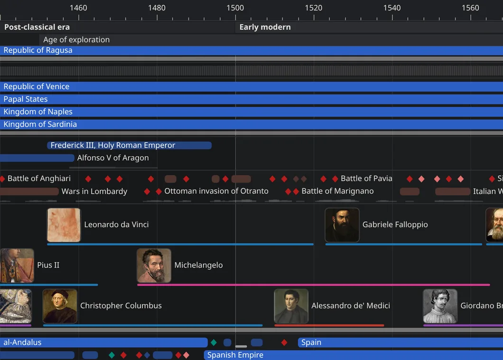
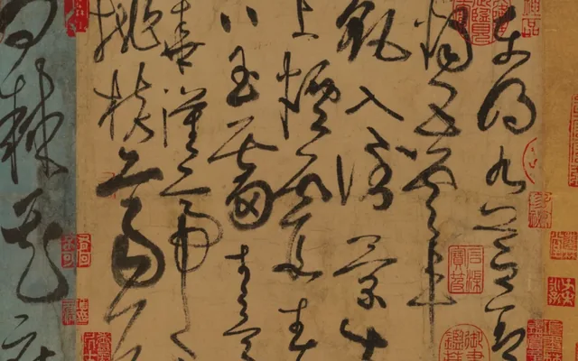
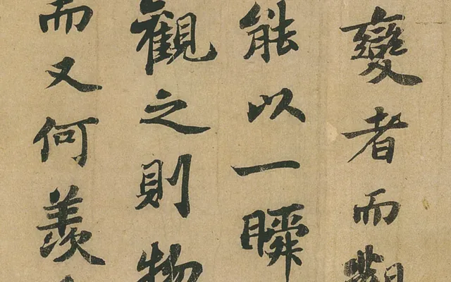
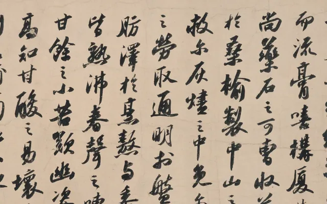
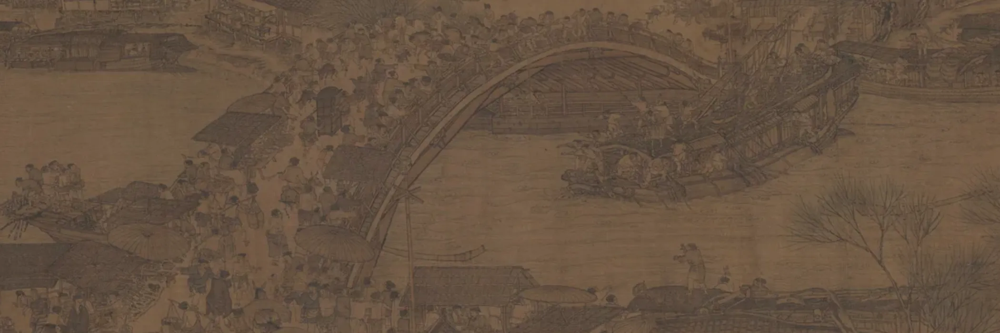
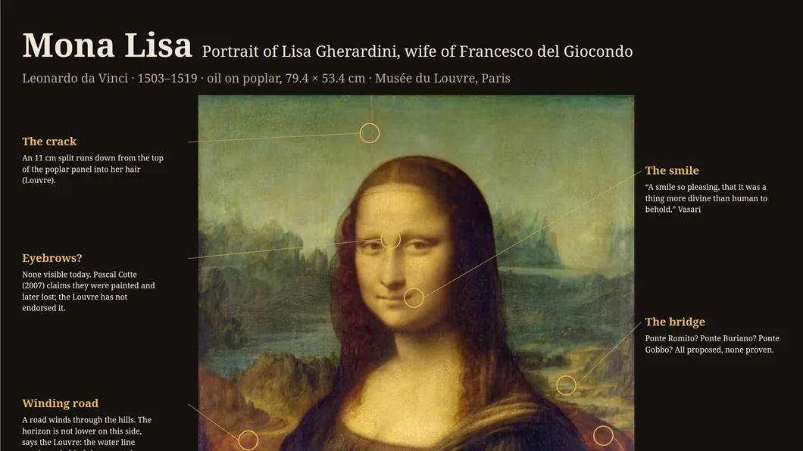
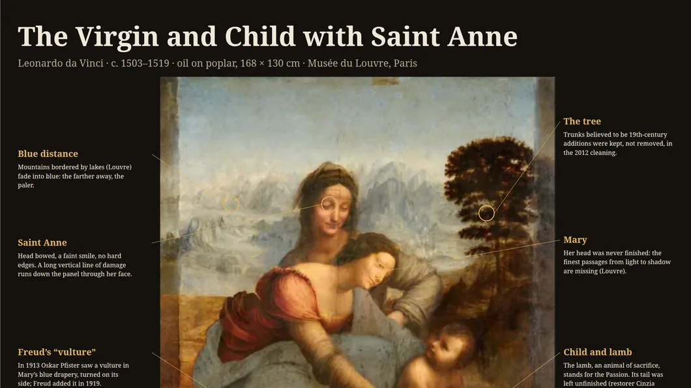
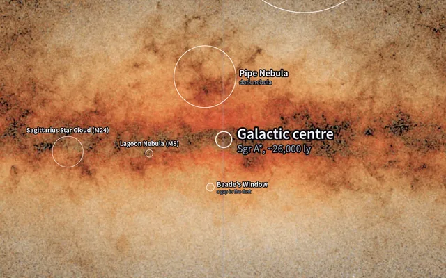
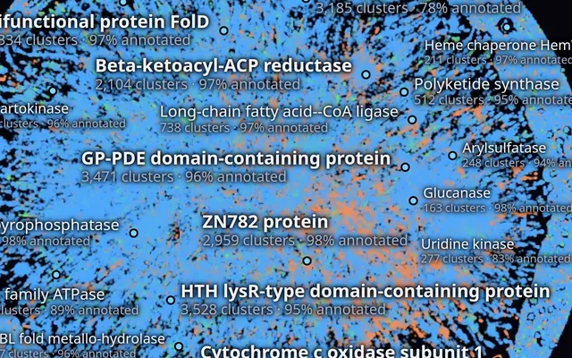

灯火与河流World atlas — lights, rivers, relief
Every light seen from space, every river on Earth, the relief beneath them and the cities they meet — one map to search and zoom.
太空中看到的每一处灯火、地球上的每一条河、地形起伏与沿河城市，同在一张可搜索、可缩放的地图上。
Open the atlas →一张图，从全貌放大到细节：可搜索、可缩放，并附导览。
One picture, from the whole down to the detail — search it, zoom into it, or let the tour show you round.

Every light seen from space, every river on Earth, the relief beneath them and the cities they meet — one map to search and zoom.
太空中看到的每一处灯火、地球上的每一条河、地形起伏与沿河城市，同在一张可搜索、可缩放的地图上。
Open the atlas →
188,530 states, rulers, events and people from 3200 BCE to today, in 27 lanes across eight regions of the world. Zoom into any era and its names open up; show the people as portraits, and find anyone in English or Chinese.
从公元前3200年到今天，国家、君主、事件与人物共188,530条，按世界八大地区分27行排列。放大任一时代，名字随之展开；人物可显示为肖像，可用中文或英文查找。
打开时间轴 →
340,195 Tang and Song shi, Song ci and Yuan qu, each a dot, placed by what it says. Discs inside discs are themes inside themes — zoom in and the smaller ones are named.
唐宋诗、宋词、元曲三十四万首，一首一点，按诗意排布；圈中有圈，主题套主题，放大即见细分。可按题目、作者或首句找诗。
打开图谱 →
人称“天下第三行书”。从卷首到卷尾展开：本幅十七列逐列释文，黄庭坚跋、乾隆御笔引首一一注解。
Called the third-greatest running script under heaven, unrolled end to end: the poem's seventeen columns transcribed one by one, Huang Tingjian's colophon and the Qianlong frontispiece annotated.
展开长卷 →名帖逐列释读，可放大到一笔一画，并附导览。 — Great scrolls read column by column, down to a single stroke, each with a tour.

神龙本，二十八列逐列释文，二十个「之」字一一标出。

三张照片拼成一卷狂草，四首诗与历代题跋原文。

二十四列逐列释读，涂改与旁添一一标出，及历代题跋。

五十一列逐列释文，卷首文徵明补书三十六字。

两篇酒赋七十七列逐列释文，一〇九四年南迁途中自跋。
五件墨迹，同一比例，从治平帖到渡海帖。

卷首自画东坡像，四十五列逐列释文。

三十一列逐列释文，及鲜于枢等人题跋。
张择端的长卷与达芬奇的两幅画，原图放大到细节，逐段讲解，附导览。 — Zhang Zeduan's handscroll and two of Leonardo's paintings at full resolution, their details called out, each with a tour.

五米多的长卷从右往左读：郊野、漕船、虹桥、街市、城门与城内，一段段放大细看，中文解说。

放大到裂纹、眉毛、微笑与远处的桥；她是谁、1911 年的失窃、清漆之下的画层。

从远山、圣安妮、未完成的玛利亚头像到弗洛伊德的「秃鹫」；草图与其他版本，2011–12 年的修复。
清明上河图另有英文解说版 · Along the River with an English tour: youdata.github.io/qingming-shanghe →
从星系、银河、火星到蛋白质，一张大图放大到细节，附导览。 — From a galaxy and the Milky Way to Mars and the proteins of life, one picture from the whole down to the detail, each with a tour.

哈勃拼接图里三分之一个仙女座星系，从核球、尘埃带到外盘，中文解说。

Gaia DR3 四百万颗星画出的全天，与所有亮于 G = 11 的星，两图切换。

耶泽罗陨石坑里毅力号逐次行驶的路线与 28 个岩土样本；可查样本、地名或火星日。

四百二十七万个 AlphaFold 蛋白质簇按序列相似连成网络，六种着色；可查蛋白家族或 UniProt 编号。
仙女座另有英文解说版 · Andromeda with an English tour: youdata.github.io/andromeda →
这些页面保留原样，可能已无法正常使用。 These pages are kept as they were and may no longer work.